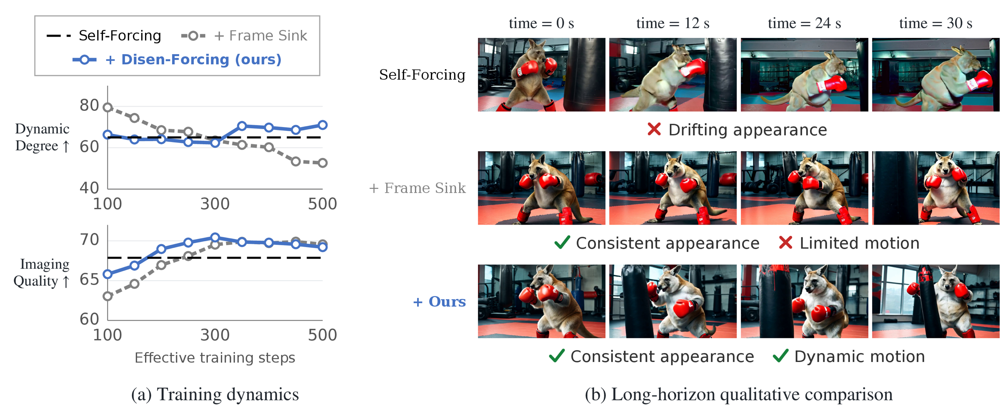
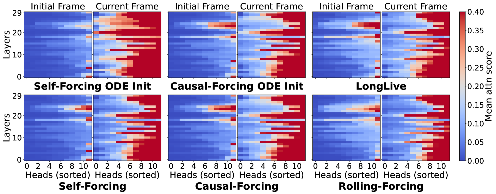
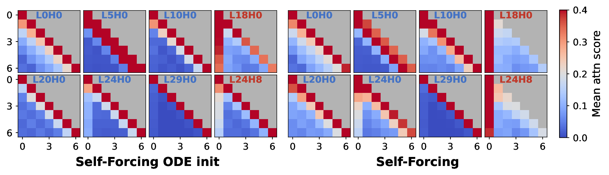
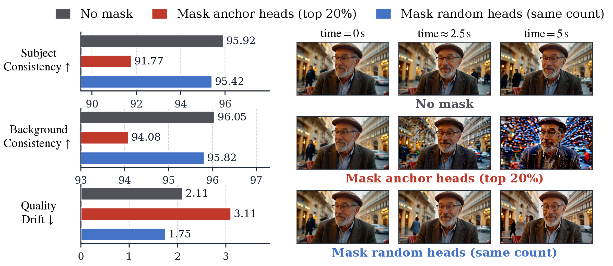
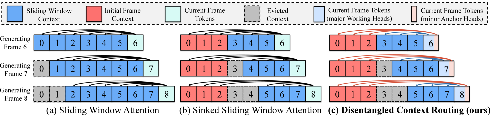
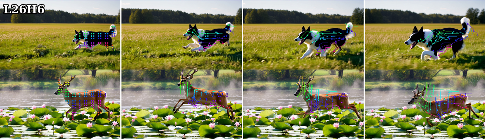

Disen-Forcing

TL;DR
Initial-frame tokens are not an LLM-style attention sink in AR-VDMs: long-range consistency is anchored by a sparse subset of attention heads, while most heads capture local temporal dynamics. Frame sink exposes every head to the initial frames, which makes distillation prone to collapsing motion.
Disen-Forcing is a distillation-time plug-in that disentangles semantic anchoring from motion in AR-VDMs via disentangled context routing and motion-disentangling regularization.
On long-horizon video generation, Disen-Forcing improves both the long-range consistency and the motion dynamics of base AR-VDMs, a trade-off that sink-based methods fail to balance.
Diagnosis
Initial-frame tokens are not a universal attention sink
The vast majority of heads attend predominantly to the current frame, not the initial frames.

Initial frames sustain consistency through sparse heads
Most heads are Working Heads with a local temporal pattern; a sparse minority of Anchor Heads attend strongly to the initial frame across AR steps.


Universal frame sink causes motion collapse
In current sink-based AR-VDMs, however, the initial frames are exposed to every head. Combined with the mode-seeking DMD objective, this offers the student an easy shortcut toward high-fidelity static modes, leading it to over-condition on the initial frames at the cost of motion.
Method
Given an ODE-initialization model, we first perform a one-time identification of anchor heads, then distill with two complementary components.
Disentangled context routing

Motion-disentangling regularization

Routing alone cannot fully close the leakage from Anchor Heads into motion construction: it constrains only which context each head reads, not which aspect of the generated video each head shapes. We therefore require local motion construction to remain invariant under intervention on Anchor Heads' access to initial frames. Using the cross-frame self-attention map as a motion proxy, we run a counterfactual pass that replaces the anchor heads' routed context with the sliding window, and penalize the KL divergence between the two proxies in layers that contain no anchor heads.
Results
Self-Forcing suffers from temporal drift once the inference rollout exceeds the training horizon; Frame Sink avoids temporal drift but yields low-dynamic, conservative motion. Ours (Disen-Forcing) is both drift-free and temporally dynamic.
| Model | 30 s | 1 min | ||||
|---|---|---|---|---|---|---|
| Imaging Quality ↑ | Dynamic Degree ↑ | Quality Drift ↓ | Imaging Quality ↑ | Dynamic Degree ↑ | Quality Drift ↓ | |
| Self-Forcing | 67.87 | 40.44 | 7.23 | 65.68 | 34.70 | 12.73 |
| + Frame Sink | 69.94 | 35.66 | 3.40 | 70.34 | 35.83 | 3.10 |
| + Disen-Forcing | 70.05 | 73.12 | 4.03 | 70.01 | 73.95 | 4.04 |
| Causal-Forcing | 65.75 | 68.28 | 9.38 | 62.57 | 64.91 | 12.96 |
| + Frame Sink | 71.45 | 17.75 | 3.25 | 71.51 | 16.06 | 3.66 |
| + Disen-Forcing | 69.77 | 69.72 | 4.83 | 68.96 | 69.64 | 5.10 |
BibTeX
@article{yu2026disenforcing,
title={Disen-Forcing: Disentangling Semantic Anchoring from Motion for Autoregressive Video Diffusion},
author={Yu, Zhengyang and Hayakawa, Akio and Ishii, Masato and Yu, Qingtao and Li, Xuesong and Shibuya, Takashi and Mitsufuji, Yuki and Zhang, Jing},
journal={arXiv preprint arXiv:2611.02822},
year={2026}
}